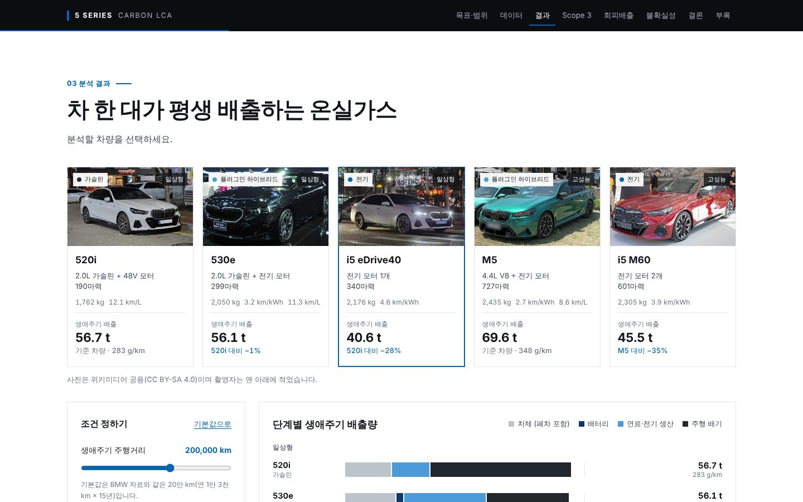
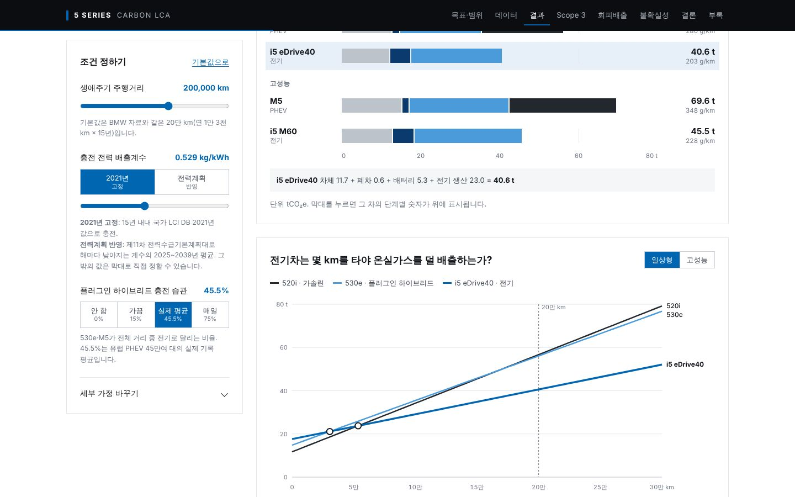
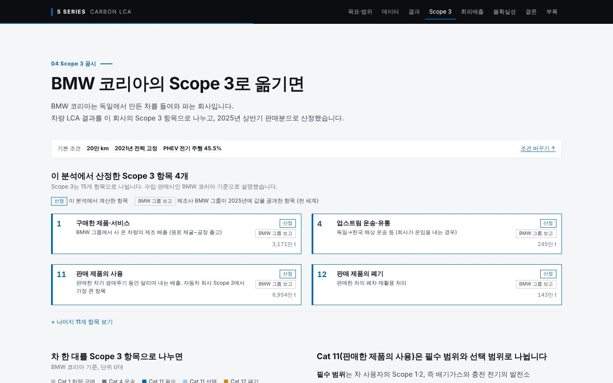

PROJECT 01 · 개인 · 2026
BMW 5시리즈 온실가스 분석
Python(Pandas, NumPy) · JavaScript · 국가 LCI DB · ISO 14044·14067 · GHG Protocol · WBCSD
제품 하나로 LCA → Scope 3 → 회피배출을 이어서 계산해본 경험입니다.
−28%
i5 eDrive40의 생애 배출,
520i 대비
5.4만 km
배터리 제조로 더 낸 배출을
만회하는 주행거리
31.5만 t
2025년 상반기 판매분
Scope 3 Cat 11(필수 범위)
1.33만 t
i5 828대의 회피배출
(Scope 3와 따로 보고)
- 1
제품 LCA
ISO 14044·14067을 참고해 기능단위(승용차 1대로 20만 km 주행)와 시스템 경계(제조~폐차)를 정했습니다. 국가 LCI DB 데이터셋을 IPCC 6차 보고서 기준으로 다시 계산해 5개 차종의 생애주기 배출을 구했습니다.
i5 eDrive40 40.6 t vs 520i 56.7 tCO₂eq - 2
Scope 3
LCA 결과를 BMW코리아(수입·판매사) 입장에서 나눴습니다. 차량 제조는 Cat 1, 출고 운송은 Cat 4, 사용은 Cat 11, 폐차는 Cat 12입니다.
5시리즈 3종 9,456대 기준 Cat 11 약 31.5만 t - 3
회피배출
WBCSD 지침에 따라 i5 판매로 줄어든 배출을 산정하고, Scope 3에서 빼지 않고 따로 보고했습니다.
i5 828대 기준 약 1.33만 t
i5 eDrive40은 520i보다 생애 배출이 28% 적습니다
차 한 대, 20만 km 주행 기준 생애주기 배출량(tCO₂eq) · 기본 조건
차체 제조·폐차배터리 제조연료·전기 생산주행 배기
LESSON같은 제품도 보고 주체에 따라 범주가 달라집니다. BMW 그룹에게 공장 배출은 Scope 1·2이지만, BMW코리아에게는 차량 전체가 Cat 1입니다.
결과를 받쳐주는 판단
- 찾았지만 쓰지 않은 데이터 3개와 이유를 기록했습니다. 평가계수 표의 휘발유 값은 실제 데이터셋의 9분의 1이라 뺐고, 자동차운반선 데이터는 제조 값에 출고 운송이 이미 있어 이중 계산이 되므로 뺐습니다. 발전원별 합산은 18% 차이의 원인을 확인하지 못해 쓰지 않았습니다.
- 주행거리·전력·충전 습관 등 11개 가정을 하나씩 바꾼 민감도 분석과 2만 번 무작위 계산으로 결론이 유지되는지 확인했습니다.
공개자료로 한 개인 분석이며 BMW 공식 수치가 아닙니다.


